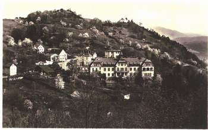

Malebná obec Ryjice leží v idylickém údolí kolem Neštěmického potoka jen pár set metrů vzdušnou čarou od Neštěmic — skryta za jedním z kopců.
Poloha a první zmínka
Obec leží přibližně 265 metrů nad mořem na stejnojmenném potoce, ve svahu, který je obrácen k jihu. První zmínka o obci pochází z r. 1186 jako o vsi Riwicih. Jméno obce je odvozeno od starého obyvatele jménem Ryja. Ryjic pak znamenalo jeho potomci, přivlastňovací tvar. Asi v 16. století bylo k tomuto tvaru přidáno plurálové zakončení, takže z původního Ryjic vznikly Ryjice.
Ryjice v proměnách dějin

Obec patřila většinou ke Krásnému Březnu a později i k hradu Blansko. Počátkem 16. století se stal majitelem vesnice děkan kostela Panny Marie v Ústí nad Labem Mikuláš Moller. V roce 1515 jej potkala tragická smrt a obec přešla po jeho smrti do vlastnictví královského města Ústí nad Labem. V roce 1554 však obec Ryjice od města ve veřejné dražbě koupili bratři Vchynští z Vchynic jako majitelé panství Svádova a získali tak celé okolí Neštěmic až po Krásné Březno.
Ves ležela v blízkém sousedství se svobodným statkem Mojžíř, který patřil Kryštofu Smrzovskému ze Sebuzína. Výsledkem rozmíšky byla krvavá šarvátka, v níž se Vchynským podařilo Kryštofa Smrzovského zajmout. Výsledkem soudního sporu u královského soudu v Praze byl mezi Vchynskými a Smrzovským uzavřen 17. října 1565 kompromis, podle něhož si Vchynští směli ponechat napřed ponechat napřed odebrané doly a ostatní majetek v Ryjicích a svobodném statku Mojžíř vrátit.
Rod Vchynských
Na Svádově vládli Vchynští téměř celé století a jejich nejstarší dochovanou stavbou je kostel sv. Jakuba v Svádově, kterým Kryštof z Vchynic obdaroval v roce 1573 místního kněze. S výstavbou této architektonicky cenné stavby, jež je pokládána za nejhezčí pozdně gotickou stavbu kostela na Ústecku se začalo již v roce 1562.
Dalším významným stavebním počinem Vchynských bylo vystavění svádovského zámku, který byl postaven patrně ve druhé polovině 16. století, je však zachycen v současné podobě až na vedutě J. Willenberga z roku 1602. Willenbergova veduta je patrně i nejstarším vyobrazením Ryjic.
Josef Karel Vchynský z Vchynic
Josef Karel Vchynský z Vchynic, hrabě z Borohrádku a Hrubé Skály, generál jezdectva, tajný rada, císařský komoří, se narodil v Ryjicích 2. května 1616 a zemřel 3. prosince 1683 v Lípě u Chomutova. Věnoval se vojenské kariéře, vynikal chrabrostí a vyznamenal se v bojích proti Švédům u Lipska 8. září 1642, kdy utrpěl bolestivá zranění.
Zúčastnil se také bojů proti Turkům, kteří pronikali do Uher. V roce 1643 se vrátil z vojenské kariéry a ujal se správy rozsáhlých majetků. Ke svádovskému a teplickému panství připojil část zbořeného hradu Blansko a Chlumce, které odkoupil za 250 000 říšských tolarů od Anny Alžběty, hraběnky Kolovratové. Na Svádov pak vozil v říjnu 1681 návštěvu strahovského opata Kryštofa Strahovského.
Josef Karel Vchynský zemřel v úctyhodném věku 68 let. Byl pohřben ve Vchynské hrobce v Kostele sv. Jakuba ve Svádově. Po jeho smrti došlo k rozdělení majetku. Panství svádovské a české lety získal vnuk generála Vincenz Ferrer z Vchynic a Tetova, jehož potomci drželi svádovské panství, včetně obce Ryjice, až do patentu o zrušení feudalismu a nevolnictví v roce 1848.
Dolování železné rudy
Po dlouhá léta se obec uživila zemědělstvím. Důležitým příspěvkem k obživě jejích obyvatel bylo dolování železné rudy v pohoří nad obcí. Doly na těžbu železné rudy obdržely od majitelky panství hraběnky Therezie Vchynské z Vchynic první horní povolení v roce 1773. Hnědel se pak v Ryjicích a v blízkém okolí obce až do roku 1874. Ruda byla vozena zvláštním nákladním povozem do železáren v Podmoklech.
Dalším zdrojem pro rozvoj obce byla výroba vápna. Vápenec byl získáván lomovým způsobem přímo v obci. Historie této výroby sahá hluboko před polovinu 19. století. Počátek výroby byl prováděn velice primitivním způsobem, takže vápno se pálilo přímo na výchozech vápenných slojí. Teprve později byly postaveny klasické vápenické pece. Po odkryvu výchozů vápenných slojí se začal vápenec dobývat rozsáhlými lomy. Takto vzniklé lomy se rozkládaly nad obcí jižně od silnice na Neštěmice. Později byla rozšiřována činnost i severně od silnice, kde se nacházely nové sloje vápence. V roce 1949 byla výroba přemístěna do Velkých Žernosek nad Malými Žernosky. Po dolování zůstaly v obci ohromné dutiny, velké lomy a vytěžené sloje. V posledních letech jsou ty otevřené lomy zaváženy technickou zeminou ze staveniště dálnice D8.
Romantický kout přírody
Díky poloze má obec velmi pěkné přírodní scenérie. Lze říci, že se jedná o romantický kout přírody, který je obklopen ze severu zalesněným Neštěmickým potokem, ze severu romantickou skálovou obcí s ovocnými stromy, z jihu údolím Rovného potoka a Mlýnského potoka. Ryjice jsou pozoruhodné také krásnými geologickými útvary ze třetihorní činnosti.
Významným romantickým místem obce jsou Ryjické skály. Nejvyšší plošina skal dosahuje výšky 370 metrů nad mořem a převýšení nad hladinu potoka je 155 metrů. Plocha je mírně skloněna k severovýchodu. Skalní ostroh je z jihu i západu obklopen strmými stěnami skalních útesů. Výhled z nejvyššího bodu je díky vzrostlým smrkům velmi omezen, ale při pohledu do údolí se vám nabídne zajímavý pohled na celou obec, a pohled do Neštěmického údolí s výraznou dominantou strmé skály Bělice, pod kterou protéká Neštěmický potok a která mu uzavírá Neštěmickou oboru.
Plicní sanatorium

Na jih od obce se nad úzkým údolím Mlýnského potoka vypíná kopec zvaný U Lomu. Celá lokalita je známa pod názvem Sanatorium a podle této dominanty byl i kopec nesprávně označen. Podle ústecké obyvatelstvo si v roce 1895 nechalo postavit plicní léčebný ústav v místě dnešního sanatoria. Zprvu byla na tomto místě postavena jen skromná dřevěná budova, která byla v průběhu roku 1895 nahrazena novou plicní sanatorem. Bylo otevřeno 2. dubna 1895 jako první velký plicní léčebný ústav v severních Čechách.
Rozsáhlá zahrada obklopovala sanatorium, ve které bylo dostatek klidu a sanatorium vlastnilo i vlastní vodárnu a čistou zřídelní vodu. Celý komplex i s přilehlým arboretem patřily k nejlepším plicním léčebným zařízením v Severních Čechách, specializujícím se hlavně na tuberkulózu. Plicní sanatorium bylo otevřeno celý rok až do konce druhé světové války. V roce 1945 byl celý komplex zkonfiskován a stal se státním léčebným ústavem. Léčebný komplex byl stále užíván pro léčbu plicních onemocnění, ale již v omezené míře. Léčili se zde hlavně přední pracovníci komunistické strany. V roce 1988 bylo sanatorium zavřeno a po delší době chátrání bylo zbouráno. V současné době je objekt opuštěn, nevyužit, v okolí probíhá rozsáhlá stavební činnost.
Spolkový život
V obci od nepaměti fungoval spolkový život. Přírodní krásy obce daly podnět k vzniku Krajinářského spolku pro obec Ryjice a okolí. Mezi jeho úkoly patřilo udržování vyhlídek, zlepšování komunikací kolem obce, udržování čistoty v obci, zvelebování života a organizace kulturních akcí. V roce 1908 tento spolek vybudoval vyhlídku nad hájovnou a poblíž sanatoria — místo bylo pojmenováno Anino zátiší. Toto místo mělo vydlážděnou plošinu, lavičky pro odpočinek a zajímavý přístřešek.
Dominantou celé obce byla kaplička sv. Anny, která stála na nejvyšším místě obce. Pocházela z konce 18. století. Její stavitel není znám. Obec se mohla pyšnit zajímavými poloroubenými chalupami a statky ze 17. až 19. století. Tato roubená venkovská architektura je charakteristická pro oblasti od řeky Labe, dále pak Českým středohořím, až po pomezí Krušných hor. Bohužel byla v posledních letech značná část této architektury buď zbořena, případně necitlivým způsobem přestavěna.
Ryjice jako místo odpočinku
Od začátku 20. století byly Ryjice oblíbeným místem odpočinku občanů sousedního Ústí nad Labem, se kterým byly spojeny vlakem Ústecko-teplické dráhy a autobusem. Tento druh obecní dopravy sloužil obci i hostům od 15. srpna 1931. Pod kopcem Bělice byla v roce 1927 postavena Alpská chata. Byla postavena podle vzoru originálních alpských chat. Bohužel se z této chaty stala v letech po odsunu v roce 1945 dětská ozdravovna, která v roce 1982 vyhořela a její zbytky byly v roce 1985 strženy.
Osamostatnění obce
V době vzniku Velkého Ústí v roce 1981 byla obec Ryjice jako malá obec s přibližně 180 občany v roce 1980 připojena k Ústí nad Labem jako obvodní část obvodu Neštěmice. Po roce 1989 se tento stav změnil a obec byla po všech administrativních peripetiích a vlastním odhodlání místních občanů opět osamostatněna. Stalo se tak v roce 1990. V současné době má obec 240 obyvatel a žije svým vlastním životem. Stavební aktivity se týkají především výstavby rodinných domků a obnovení starších objektů v obci.